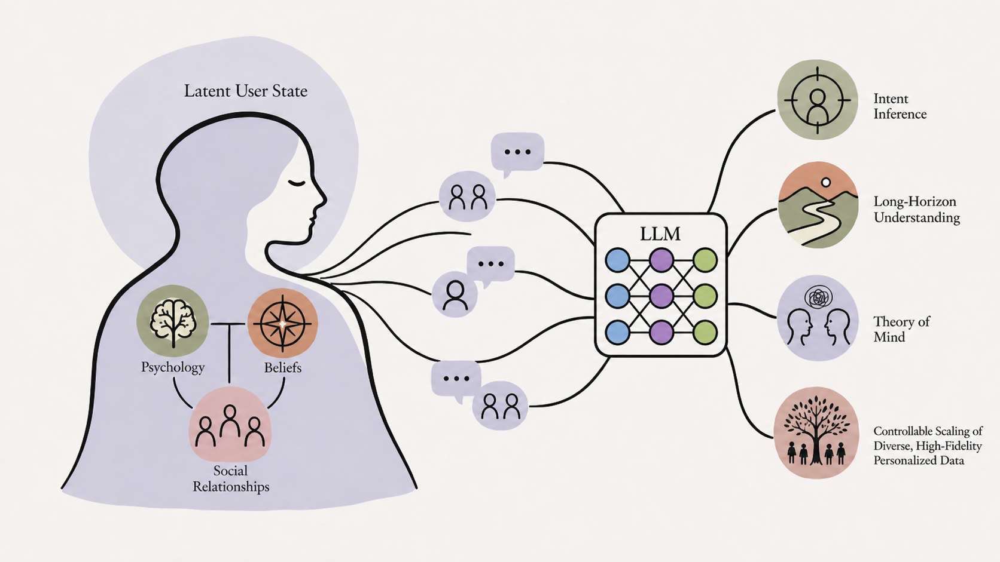
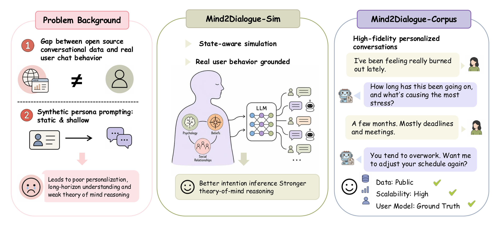
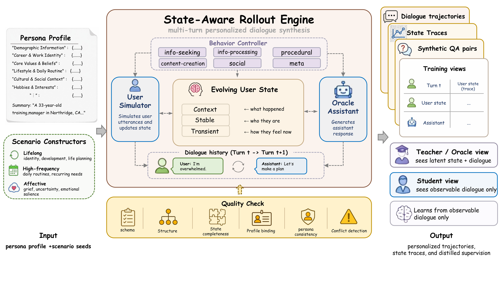
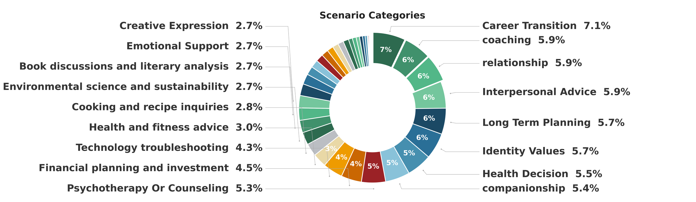
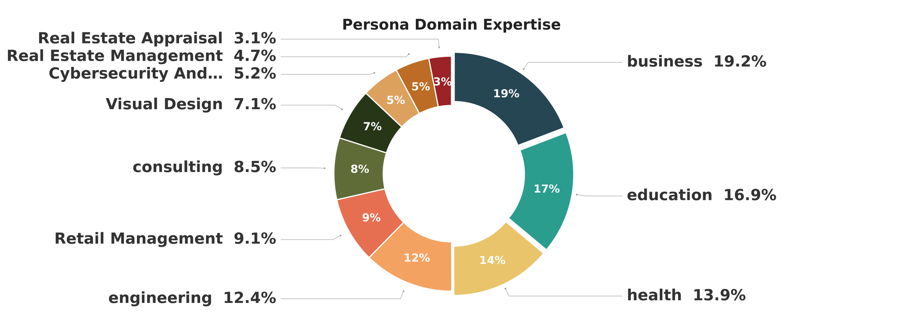
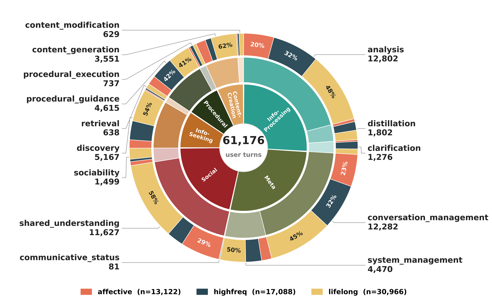
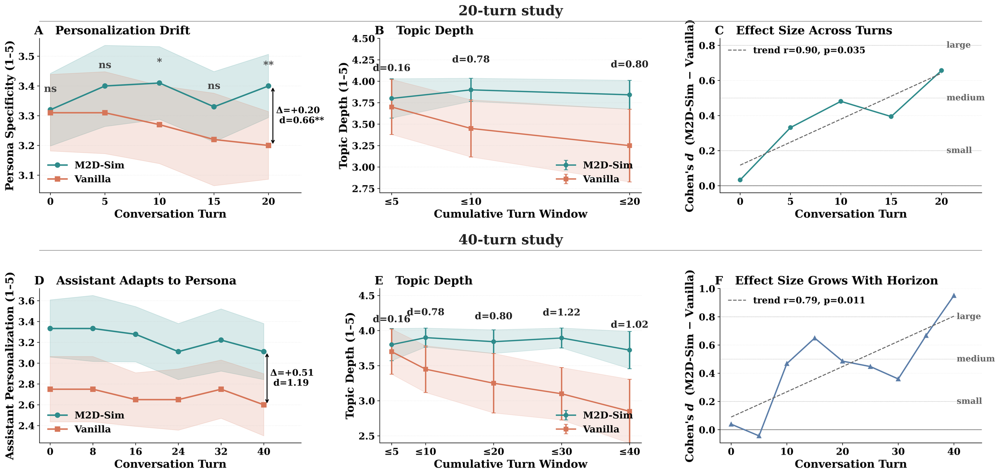
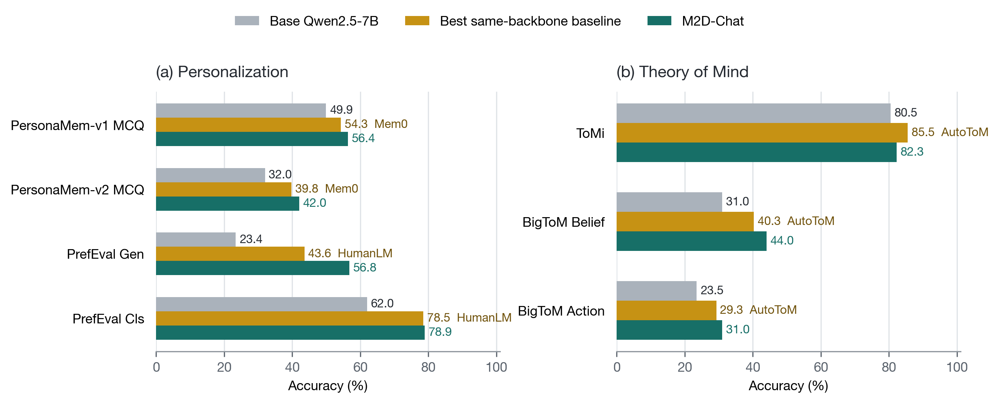
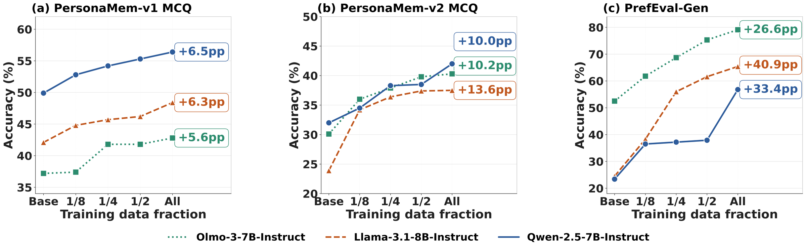
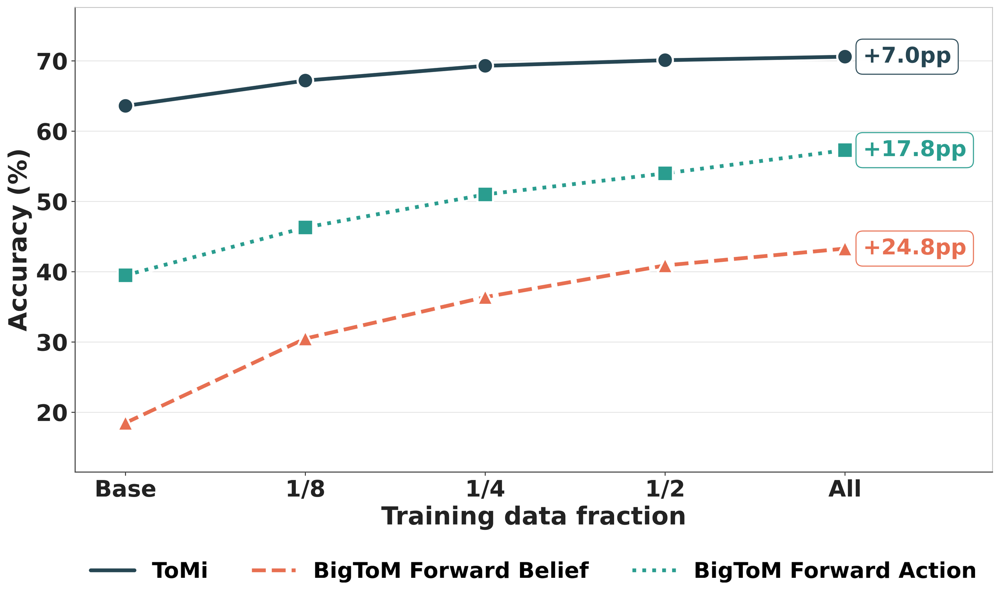

KU Leuven · UIC · Ohio State · Johns Hopkins
Mind2Dialogue: Training Human-Aware Language Models through Shared-State User Simulation
1UC San Diego 2KU Leuven 3University of Illinois Chicago 4The Ohio State University 5Johns Hopkins University
* Equal contribution · † Project lead · ‡ Corresponding author
Preprint · 2026

Abstract
Assistants must infer beliefs, goals, mood, and social relationships from dialogue, but these states are usually hidden during training. Mind2Dialogue creates them explicitly. A user simulator and an Oracle assistant share an evolving user state; the Oracle's replies become targets for a student that sees only a static persona and dialogue history. The pipeline needs no per-dialogue human annotation, and it yields M2D-Corpus: multi-turn dialogues and QA pairs whose assistant responses are grounded in the corresponding latent state. On Qwen2.5-7B-Instruct, fine-tuning raises PrefEval-Gen by 33.4 points and PersonaMem-v2 by 10.0, ahead of both memory-augmented and personalization baselines on the same backbone. Personalization also improves on Llama and OLMo. Qwen and Llama improve on Theory-of-Mind benchmarks without direct ToM supervision; OLMo does not. The narrower conclusion is that personalization and Theory of Mind may share one capability — inferring unobserved user states from observed interaction.
MethodA shared-state simulation framework
Mind2Dialogue adds one asymmetry to synthetic dialogue. The user simulator and an Oracle assistant read the same evolving state st, which stores conversational context, stable traits, and short-lived signals such as mood. The student sees only the static persona and dialogue history.

Each dialogue starts from a scenario derived from the persona, in one of three families: Lifelong, High-frequency, and Affective. The state itself is a structured record with three parts — dialogue context, slow-moving stable traits, and transient signals such as mood. At each turn a controller selects one of 16 behavior modes drawn from the six families of the TUNA taxonomy, so the simulated user is not passive or repetitive. Four programmatic checks and two LLM judges reject malformed or persona-inconsistent conversations. The surviving Oracle responses become ordinary supervised fine-tuning targets, with st removed from the student's input. The loss is plain cross-entropy; only the targets come from a state-aware teacher.

Interactive · corpus sampleOne conversation, two training views
This released Lifelong sample uses persona profile_259. The
simulator updates a latent-state report between the user turn and Oracle response. Switch views to
hide those reports and see the student's input.
The dashed cards are the evolving state st, privileged at training time and withheld from the student.
Memory"fear of not preparing them for real challenges in the field … values hands-on experience and real-world scenarios"
Stable"long-term goal: ensure long-term resilience and safety of community infrastructure … while building a stable foundation for family growth"
Transient"internal tension: desire to mentor effectively while feeling uncertain about the adequacy of current methods"
Memory+ "curious about specific techniques or methods that other experienced mentors have used successfully"
Transient"moderate concern … [now with] curiosity about successful mentoring techniques from others"
Eval of assistant"the response provided useful strategies but did not directly address the emotional aspect of concern"
Memory+ "considering initiating a small project for mentees … exploring how to structure that project for maximum learning"
Transient"behavior mode: planning the implementation of a mentoring project"; doubt has shifted toward implementation
Excerpt from samples/deep_scenario_full_sample.json. Marked passages are trimmed; the rest is quoted verbatim.
The released subset is seeded from 289 personas and contains 6,330 multi-turn conversations: 2,882 lifelong, 2,020 high-frequency, and 1,428 affective. Coverage is long-tailed rather than concentrated on a handful of topics — the top 9, 18, and 28 of the 47 scenario categories account for about 52%, 81%, and 96% of the conversations.



Pilot study · SimulatorThe full simulator holds up over long conversations
Before any student training, we compare M2D-Sim with a Vanilla simulator that omits both the structured state and the behavior controller. An LLM judge prefers M2D-Sim on all five trajectory measures, with a composite effect size of d = 2.12 and a higher aggregate score for all 20 held-out personas (p < 0.001). The two conditions are indistinguishable at turn 0 and then separate as the dialogue grows longer: topic depth moves from d = 0.16 at turn 5 to d = 1.22 at turn 30, and over 40 turns the Vanilla personalization score slides from 2.75 to 2.61 while M2D-Sim holds near 3.1. A component ablation attributes most of the persona-specificity gap to state maintenance rather than behavior prompting — dropping the state while keeping behavior prompting costs d = −0.49, while dropping the behavior controller and keeping the state costs only d = −0.15. Vanilla users are also 2.4× more verbose, so length does not explain the gap. These scores evaluate the simulated user, not the student's later performance.

Result · StudentsM2D-Chat improves personalization
M2D-Chat is Qwen2.5-7B-Instruct fine-tuned on M2D-Corpus with LoRA. It scores highest on all four personalization evaluations — 56.4 on PersonaMem-v1, 42.0 on PersonaMem-v2, 56.8 on PrefEval generation, and 78.9 on PrefEval classification — for gains of +6.5, +10.0, +33.4, and +16.9 over the base model. Its widest margin over the strongest task-specific baseline is 13.2 points on PrefEval generation. Mem0 helps less on PersonaMem because it adds retrieval to a fixed model, while M2D-Corpus changes the model through supervised fine-tuning.
M2D-Chat also passes its own teacher, GPT-4o-mini, on PersonaMem-v1 (56.4 vs 48.6), PersonaMem-v2 (42.0 vs 37.3), and PrefEval generation (56.8 vs 21.1). GPT-5-mini remains ahead on all four evaluations, by the largest margins on the two PrefEval splits.


Result · TransferTheory-of-Mind transfer without ToM training data
M2D-Corpus has no false-belief tasks or third-person belief labels. Even so, Qwen improves by 13.0 points on BigToM Forward Belief and 7.5 on Forward Action, beating both AutoToM (+9.3, +5.8) and Thought-Tracing (+4.0, +3.0). ToMi is the exception: M2D-Chat gains only 1.8 points there, behind AutoToM's 5.0. Llama gains 24.8 and 17.8 points on the two BigToM subsets as the training set grows, plus 11.7 on PersonaMem-v2 generation — another evaluation whose format the training data never matched. The result is not universal: OLMo improves on personalization but drops 8.2 and 7.0 points on the same BigToM subsets.

A possible mechanism. The Oracle often responds to an unspoken fear, goal, or judgment recorded in the simulated state. The student must match that response without seeing the state. This is consistent with shared latent-state inference across personalization and Theory of Mind, but it does not show that the student reconstructs the state internally or has a general Theory of Mind.
Citation
@article{wang2026mind2dialogue,
title = {Mind2Dialogue: Training Human-Aware Language Models
through Shared-State User Simulation},
author = {Wang, Zixuan and Zhou, Yufan and Tang, Jinzhou and Wu, Chengjun
and Yu, Xinle and Ye, Lyumanshan and Feng, Zhaoxiang
and Peng, Letian and Patra, Adyasha and Bai, Fan and Ma, Enze
and Hu, Zhengding and Gu, Jianyang and Wang, Zhao and Ding, Yufei
and Shang, Jingbo and Shu, Tianmin and Hu, Zhiting and Wang, Zhen},
year = {2026},
note = {Preprint}
}